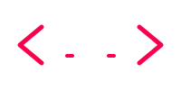

Eu sou um Programador Full Stack, tenho experiência e conhecimento criando aplicações com HTML, CSS, JavaScript, Python, IA, React, Node, Docker, MySQL e APIs.
Entre em contatoPipeline de automação que capta notícias de 9 feeds RSS e do Google Trends, reescreve com IA (Groq/Llama) e publica no WordPress com imagem destacada. n8n + MySQL, custo zero.
Ver ProjetoPainel de operação do NewsBot em Next.js 15, TypeScript e Tailwind: fila, publicações, erros, logs e métricas do pipeline, com API REST, autenticação, modo demo e 43 testes.
Ver ProjetoAPI REST de tarefas em Node.js e TypeScript com Express 5, Drizzle ORM e PostgreSQL: autenticação JWT, validação com zod, documentação OpenAPI, 36 testes automatizados, Docker e CI.
Ver ProjetoTreino musical com Machine Learning no navegador: modelos de áudio e imagem do Teachable Machine rodando com TensorFlow.js, sem backend. Projeto da disciplina de IA.
Ver ProjetoBot de música para Discord em Python com discord.py: toca do YouTube via yt-dlp, aceita links do Spotify (faixa, álbum e playlist) e desconecta sozinho por inatividade.
Ver Projeto
Programa em Java que lê o HTML de uma URL e devolve o texto no nível mais profundo da árvore, usando uma pilha para rastrear a profundidade. Desafio técnico de processo seletivo.
Ver Projeto